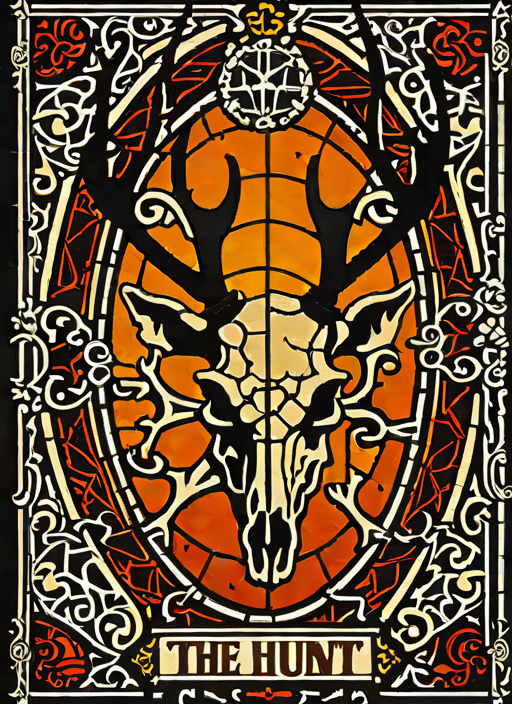
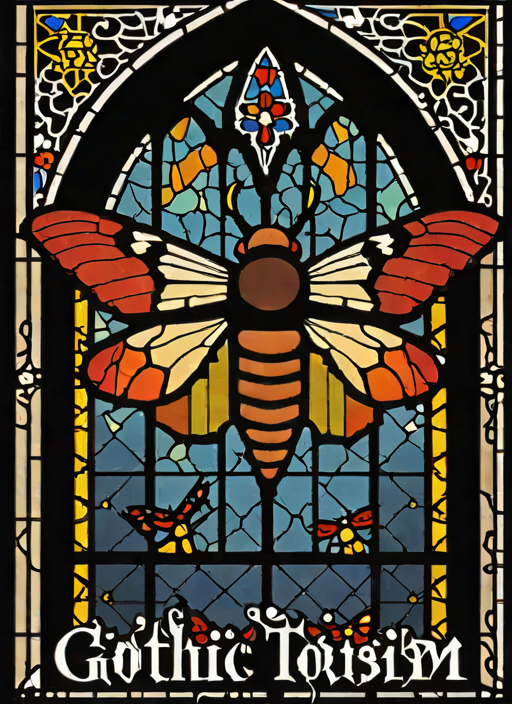
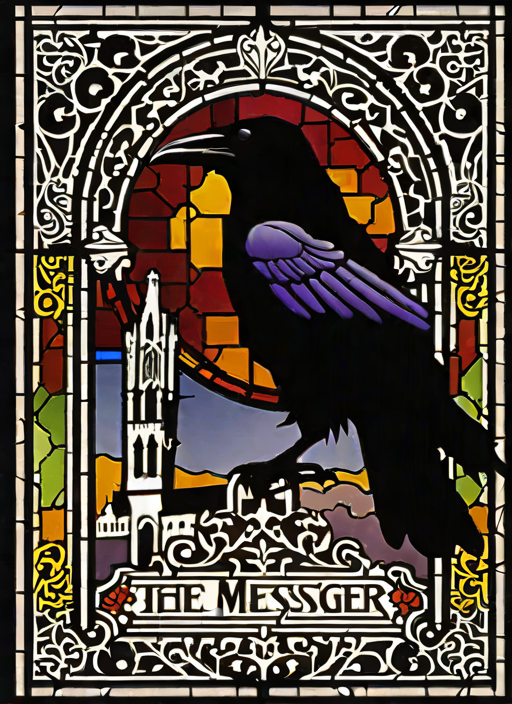
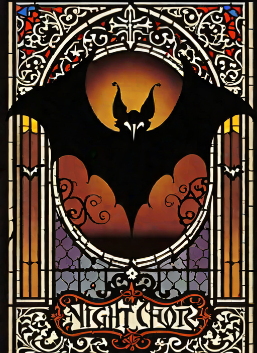
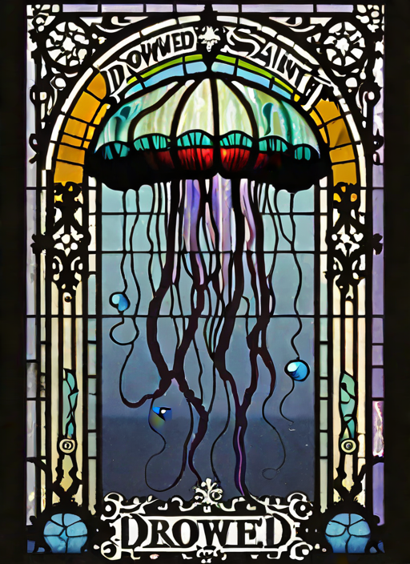
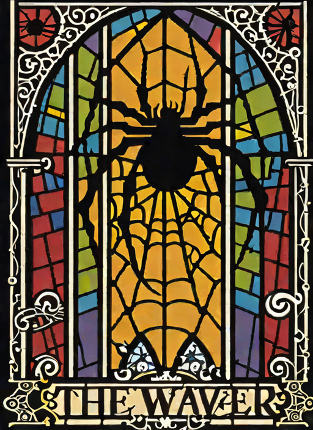
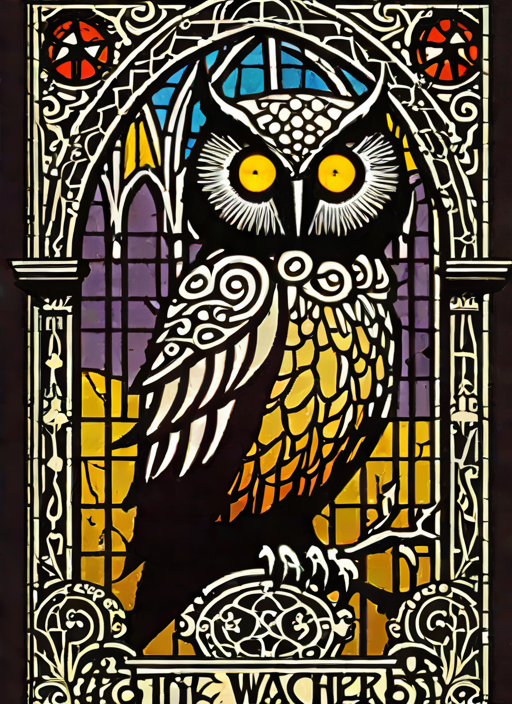
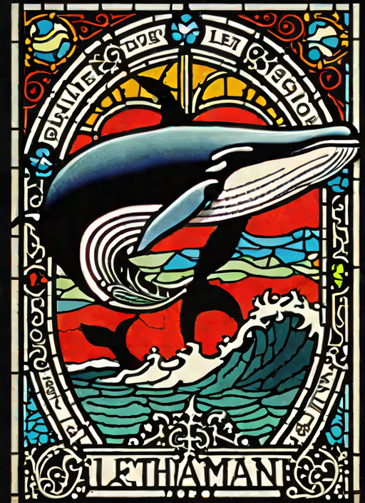

A stained-glass menagerie for a city that reads meaning into wings. The stag is a skull, the moth is a warning, the owl has too many eyes and is using all of them.

Cat. No. V.2.01The HuntLatent diffusion, single pass · AI Slop, 2026

Cat. No. V.2.02RequiemLatent diffusion, single pass · AI Slop, 2026

Cat. No. V.2.03The MessengerLatent diffusion, single pass · AI Slop, 2026

Cat. No. V.2.04NightwingLatent diffusion, single pass · AI Slop, 2026

Cat. No. V.2.05The Drifting HostLatent diffusion, single pass · AI Slop, 2026

Cat. No. V.2.06The Patient OneLatent diffusion, single pass · AI Slop, 2026

Cat. No. V.2.07It Watches BackLatent diffusion, single pass · AI Slop, 2026

Cat. No. V.2.08LeviathanLatent diffusion, single pass · AI Slop, 2026